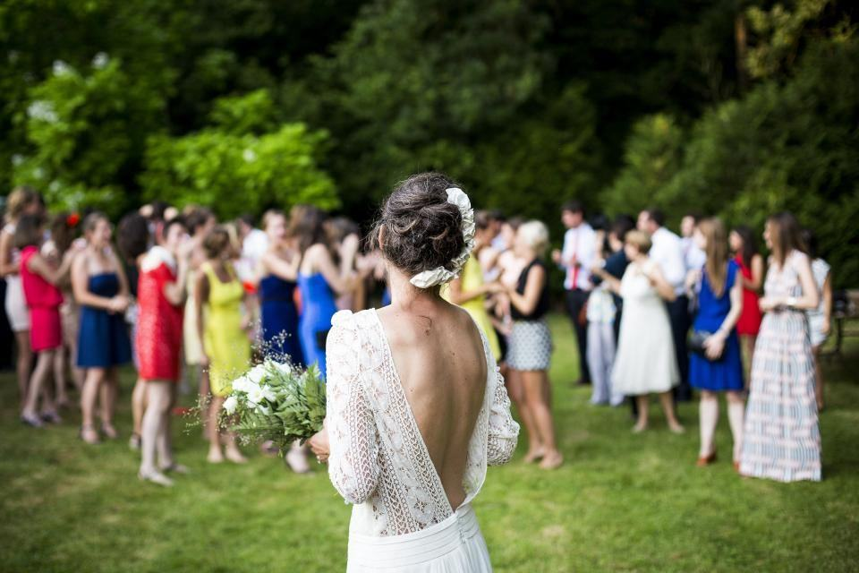

Fasta priser i Malmö och Lund
Rådhustimmen
Vigsel, gratulationer och porträtt på Stortorget.
- Cirka 80 bilder
- Telefonsamtal före
- Bilder inom sju dagar
- Malmö eller Lund
Vigsel och promenad
Vigseln och en porträttpromenad i stan.
- Cirka 180 bilder
- Porträtt i parken eller vid havet
- Detaljbilder i väntrummet
- Bilder inom sju dagar
Halvdag i stan
Vigsel, porträtt och början av middagen.
- Ungefär 300 bilder
- En timme på middagen
- Skål och tal
- Bilder inom sju dagar
Moms ingår. Malmö och Lund utan resetillägg.

Femton minuter i telefon räcker
Vi behöver inget långt möte. Ett kort samtal där vi hör vilka som kommer, om ni vill ha porträtt vid havet eller i parken och om det blir middag efteråt. Vill ni ses ändå bjuder vi på kaffe vid Stortorget.

Illustrationsbilder
Hur lång tid har ni?
- 01
Rådhustimmen
En timme: vigsel, gratulationer och porträtt på Stortorget.
Läs mer - 02
Vigsel och promenad
Två och en halv timme med porträtt i Gamla stan och parkerna.
Läs mer - 03
Halvdag i stan
Vigsel, porträtt och middagen på en restaurang i Malmö.
Läs mer - 04
Vigsel i Lund
Lunds rådhus, Lundagård och Domkyrkans portal.
Läs mer - 05
Porträtt vid havet
Ribersborg, kallbadhuset eller Västra hamnen i kvällsljus.
Läs mer - 06
Bilder på sju dagar
Alla redigerade bilder levereras inom en vecka.
Läs mer - 07
Fasta priser
Från 8 000 kronor, inga tillägg i Malmö och Lund.
Läs mer - 08
Boka direkt
Skicka er vigseltid – vi svarar samma dag.
Läs mer
Fotograferna
 Linus Ek
Linus EkMalmö rådhus, fyra dagar i veckan
Linus har fotograferat över 400 rådhusvigslar och vet exakt hur långt vigselförrättarna brukar prata. Han var tidigare eventfotograf.
Läs mer om Linus Ek Aylin Demir
Aylin DemirLund, porträtt och middagar
Aylin tar de flesta vigslar i Lund och halvdagarna. Hon talar turkiska och kurdiska och fotograferar gärna tvåspråkiga vigslar.
Läs mer om Aylin Demir
Theo LundSju dagar, varje gång
Theo redigerar alla bilder och ser till att galleriet är klart inom en vecka. Han har inte missat en deadline sedan 2022.
Läs mer om Theo Lund
3 lokala bolag – en koncern
Varje bolag drivs lokalt av sina medarbetare, med koncernens styrka i ryggen.
Rådhus, parker och restauranger


Små bröllop, stora ord
Vi var fem personer och var klara på en timme. Bilderna kom på fredagen efter, och de ser ut som ett stort bröllop.
Nadia S.Malmö Aylin pratade turkiska med min mormor hela tiden. Hon slappnade av och kom med på alla bilder.
Elif & MattiasLund Vi är 74 och 76 år och trodde inte att vi skulle vilja ha fotograf. Barnbarnen har bilderna som bakgrund i telefonen.
Rut & GunnarMalmö
- Vår garanti
Litet bröllop, samma omsorg
- Illustrationsbild

Ett rådhusbröllop är kort, men det är fortfarande er bröllopsdag. Vi kommer alltid i tid, har en reservfotograf om någon blir sjuk och levererar inom sju dagar. Missar vi deadline får ni tillbaka 1 000 kronor.
Så arbetar vi- 7 dleverans – annars 1 000 kr tillbaka
- 20 minpå plats före vigseltiden
- 1reservfotograf alltid i beredskap
Tolv minuter och en promenad
 Brud och brudgum
Brud och brudgum Brud på bröllopsdagen
Brud på bröllopsdagen Brudbukett
Brudbukett Bröllopsfest
Bröllopsfest Brudpar
Brudpar Brud på bröllopsdagen
Brud på bröllopsdagen- 06Hela portfolionIllustrationsbilder
Om rådhusvigslar
- Illustrationsbild

- Fråga 01
Hur bokar vi en vigsel i rådhuset?
Ni bokar vigseltid via Malmö stad eller Lunds kommun och ansöker om hindersprövning hos Skatteverket. Sedan skickar ni tiden till oss.
- Fråga 02
Får man fotografera i vigselrummet?
Ja. Vi stämmer av med vigselförrättaren innan och fotograferar utan blixt.
- Fråga 03
Hur många bilder blir det på en timme?
Rådhustimmen ger cirka 80 bilder, vigsel och promenad runt 180 och halvdagen 300.
Hittar du inte svaret? Ring eller mejla oss.
070-174 06 43Kolla datum- Fråga 04
Vad händer om vi blir försenade?
Vi väntar. Vigselrummet har ofta en buffert, och vi kan ta porträtten efter i stället för före.

- Fråga 05
Fotograferar ni bröllop utanför stan?
Sällan. Vi har specialiserat oss på Malmö och Lund och tar bara enstaka uppdrag i övriga Skåne mot 30 kronor per mil.
Vilken vigseltid har ni fått?
Skriv datum, klockslag och rådhus. Vi svarar samma arbetsdag.